猜疑、隔离和信息泄露，武汉返乡大学生的艰难假期
原文链接 备份链接 原创 钟玄雅 真实故事计划 真实故事计划 4天前 武汉是世界上大学生最多的城市之一。新型冠状病毒肺炎疫情爆发后，一百余万大学生返乡，成为各地防止传染的重点防控隔离对象，遭遇着忧虑、歧视和隐私泄露。疫情给这群新鲜人上了社 …
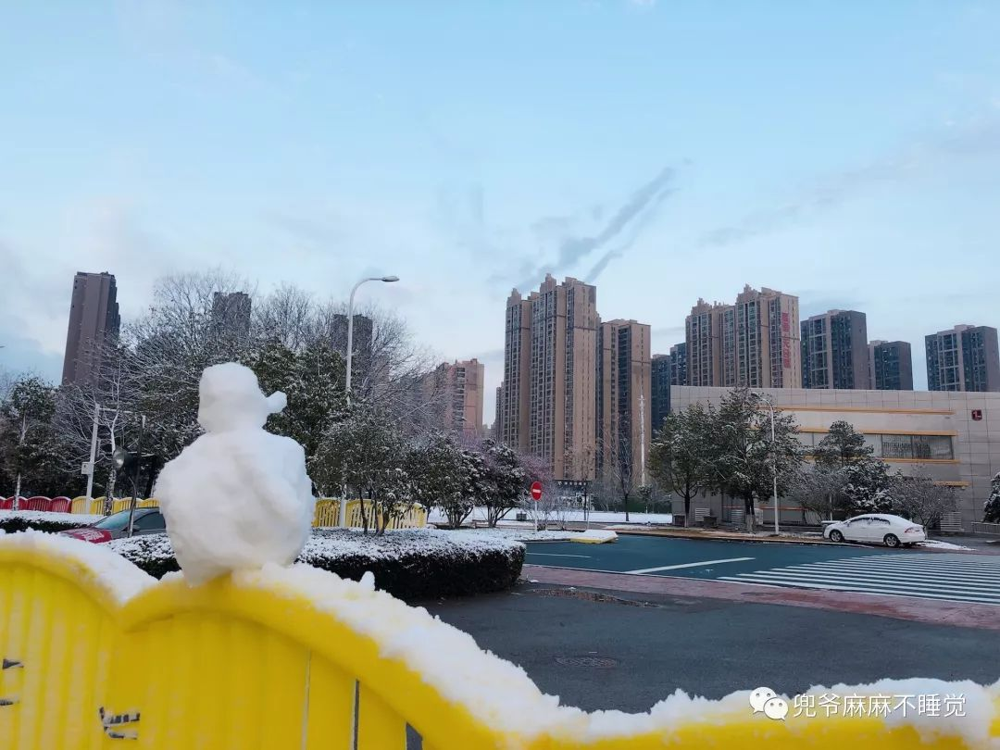
生命就是，你活着的艺术，你把自己谱成曲，你的光阴就是十四行诗。
—— 奥斯卡·王尔德
前篇
在上篇文章里，我宣布我战胜了病毒，嘚瑟了几天后。
啪~脸真疼~
之前的文章点击：
我自身的症状确实是已经好了，直到发文的今天，从来就没有反复过，一直都很正常。
但这个病毒狡猾在虽然我好了，但在接下来的一段时间内，我仍然可以传染给别人。
在我还发烧的时候，就通过微邻里上报了我的情况，在我症状全部消失后的第5天，社区打电话来通知我去做核酸检测，当时想着我已经好了，做不做没所谓，既然通知了那就去吧。
没想到，2天后结果出来，是阳性！
完全的出乎意料，核酸检测可能会因为试剂的质量，取样的位置，取样位置的病毒浓度，人员的操作等原因出现假阴性，但如果结果是阳性的话，那基本就是确定的了。
也就是说，那时即使我症状消失已经5天了，但我仍然携带着病毒，仍然具有传染性，这一点大家要格外注意，症状消失了，自身已经好了，也不代表就可以解除隔离。
核酸结果出来的当天，社区就安排我去了隔离酒店。
我住的是香港路城市快捷酒店，每天提供一日三餐，每日4次测量体温，没有其他医疗服务，个别药品可以提前申请发放。
隔离酒店的作用相当于就是提供一个单独的隔离空间，所以以往的酒店服务是没有的，缺失的生活用品可以自行叫跑腿购买或者叫家人送来，目前工作人员是不提供的。
我所在的这个酒店隔离点是由新村街社区卫生服务中心的6名工作人员来管理的，在此想感谢她们，她们为这个隔离点的患者做了很多很多。
没住几天，工作人员通知我，核酸确诊了的人需要全部转运到方舱医院。
进入方舱篇
13日中午，疾控派车过来接我，车上还有3个人，都是一起去塔子湖方舱的。

塔子湖方舱即江岸方舱，是由塔子湖体育馆改造的，可以容纳1000人。
下车后门口有个帐篷，进来了以后先登记，填表，发了一本患者手册。

患者手册里讲解了方舱医院的作用和功能流程，这是目录，其他内页感兴趣的可以在公号后台回复“患者手册”，点击下载。
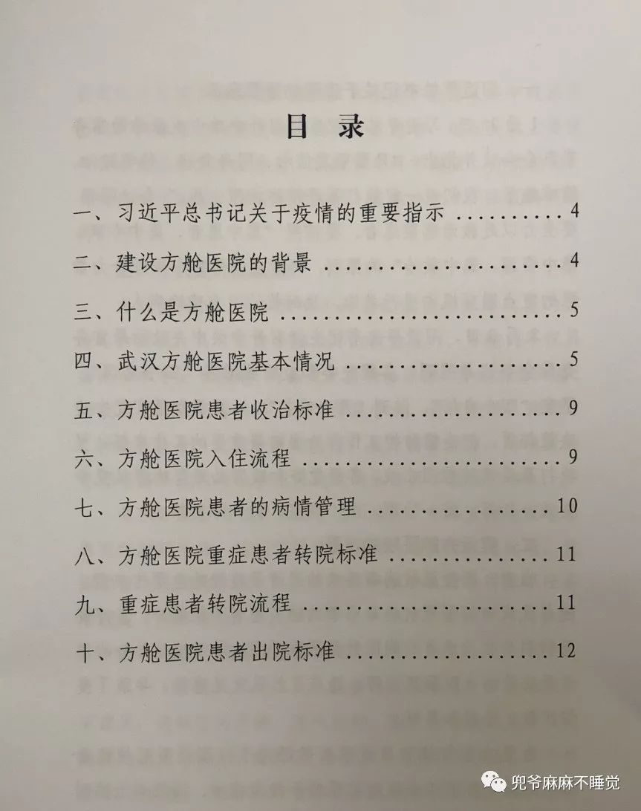
整个体育馆被分成了AB两个大区，每个大区又分为了一片片小的隔离段，男女分开。
我登记完后进去跟着护士来到了我的床位，床上有电热毯，枕头，一床薄被子，一床厚被子。

接着有护士来询问我的基本情况，有什么症状，有没有其他疾病等，然后测量体温和血氧心跳。

这是每个人发的物品。

摆开来看，有牙刷牙膏水杯，卷纸，抽纸，香皂，接线板，保温壶，充电器，眼罩耳塞，小台灯，拖鞋，毛巾，盆子，一共13件。

每个人还发了3盒药和2袋中药，中药我说过敏，没有要，然后因为我已经没有症状了，医生说可以不吃药了，所以那3盒药我也没吃。

收拾完毕。我来的时候刚好是中午，护士随后送来了中餐，葱烧基围虾，腊肉笋子，莴苣烧鸡，豌豆玉米，外加一个苹果，伙食不错。
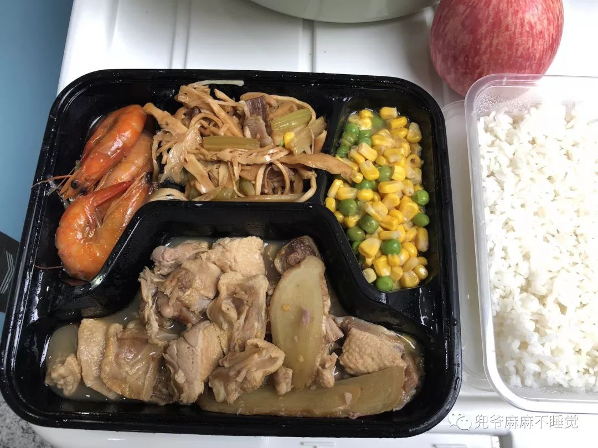
吃饱喝足以后我就开始了方舱的探索。
方舱探索篇
现在，有请，凭感觉出炉的塔子湖方舱镇楼平面图！
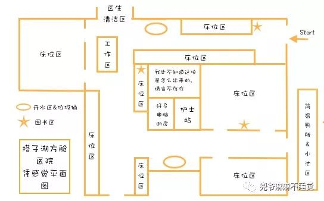
（点击放大）
我在画的时候文字很清楚的，保存了以后再打开，字就变模糊了，我也不知道为什么（电脑自带画图软件），谁能告诉我？？
跟着平面图，从入口开始，Let’s Start！
进入舱内，首先看到的是图书角，塔子湖方舱一共有3个图书角，这个是最大的。（平面图星标）

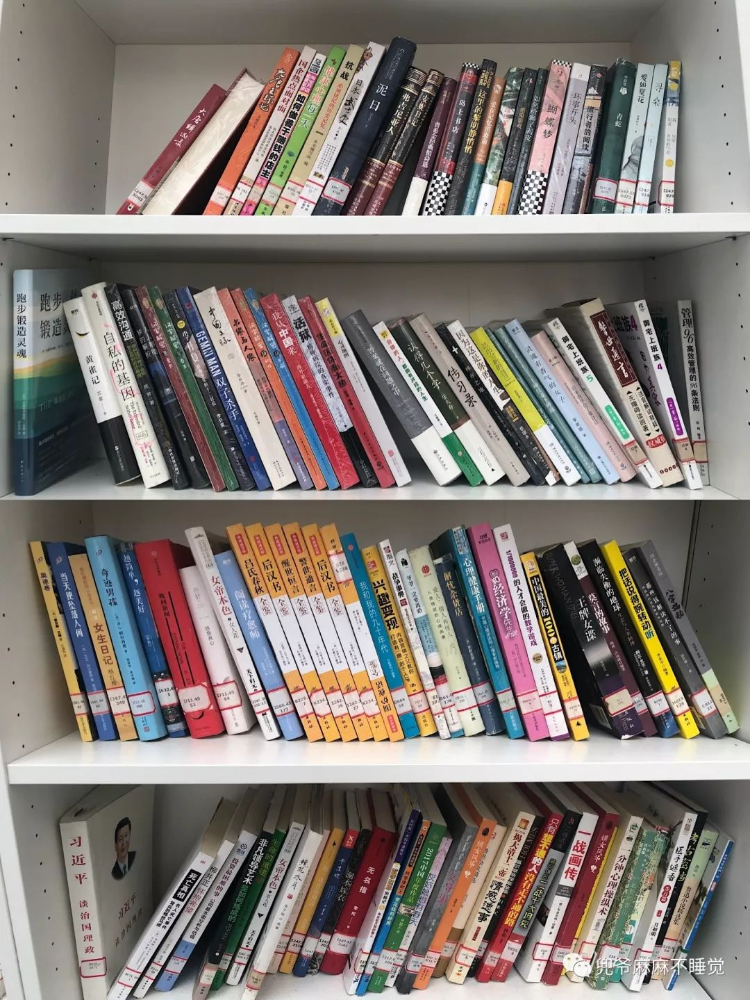
右边是一排空调，全部开的28度，场内还有很多这样的柜机，13号当天天气也还好，所以里面并不冷，我晚上睡觉时没开电热毯，盖的那床厚被子，感觉略热。
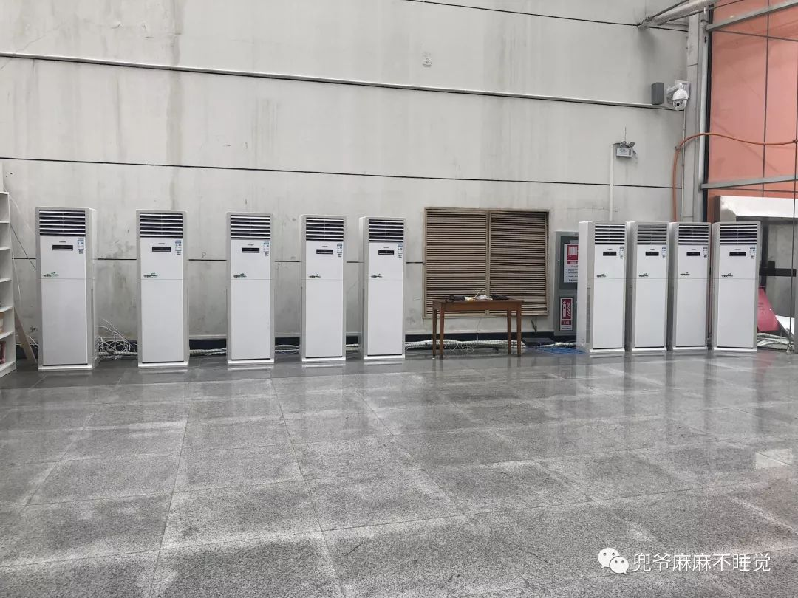
往前走前方是一个临时搭建的医护工作站，左右两边是分隔断的病床区。

再往前走，靠近护士工作站，右手边是一排开水机和微波炉，还有分类垃圾桶。（平面图椭圆标）

沿工作站的外围一圈放了若干椅子，给医护人员暂时休息。

护士站里要给病人发的药品

加油！王媛媛！
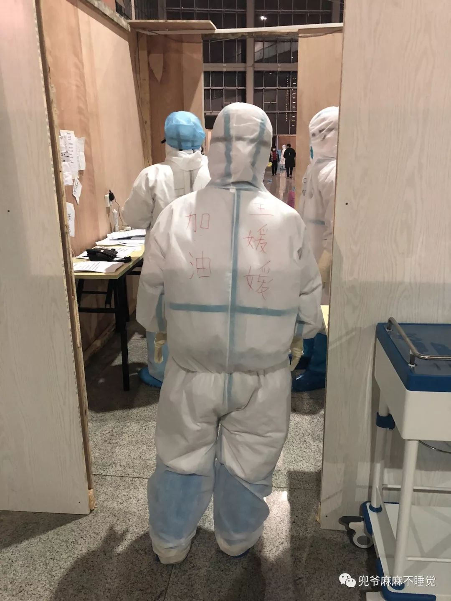
工作站背面，床位区门口，一排轮椅，提供给行动不便的人。
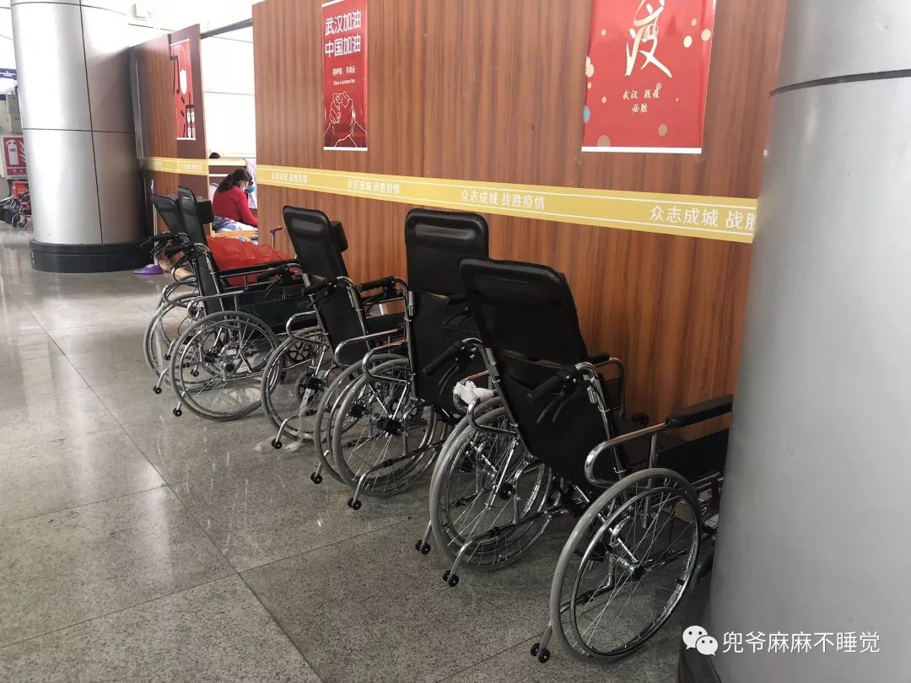
接着来到我所在的这个床位区，这是一片很大的区域，有部分屋顶是玻璃，可以看到外面的天空，感觉视野很开阔。
我进来的时候，塔子湖方舱才刚刚开舱，所以还有很多空床位。

从这片区域出来往右走是一个连廊，两边安排有床位，这片区域相对冷一点。
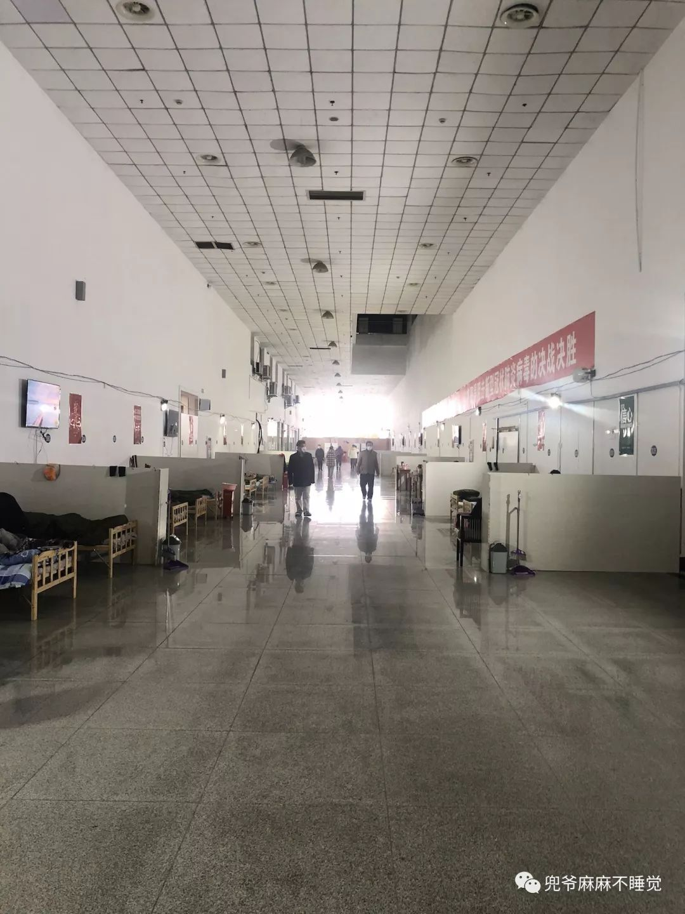
往前走在左手边有个放了很多电脑的房间，活捉一枚看书的小哥哥，书名是《现代礼仪大全》。

塔子湖方舱分为AB两个区，上面的区域全部是B区，经过这道门就是A区了。

进去后左边是护士站，右边开水区。
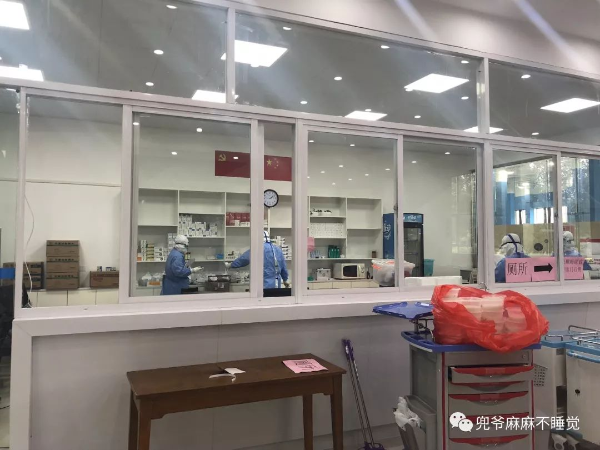
A区的床位
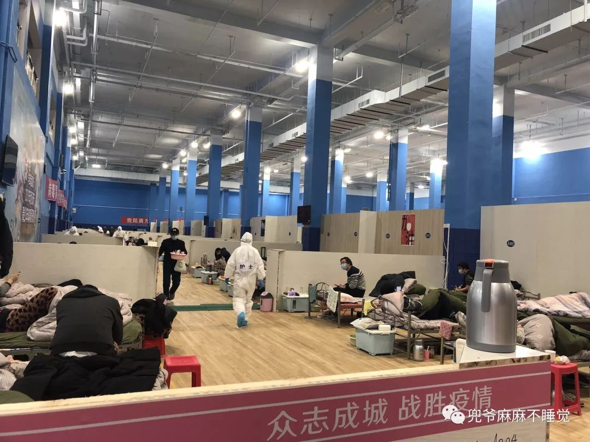
在入住的第三天晚上，我发现了这个，看侧面标签写的是光触媒空气净化消毒机，估计刚到，还没有插上电源使用。

从A区出去就是简易移动厕所和洗脸池。

整个厕所的数量是足够的，任何时候去都不需要排队。
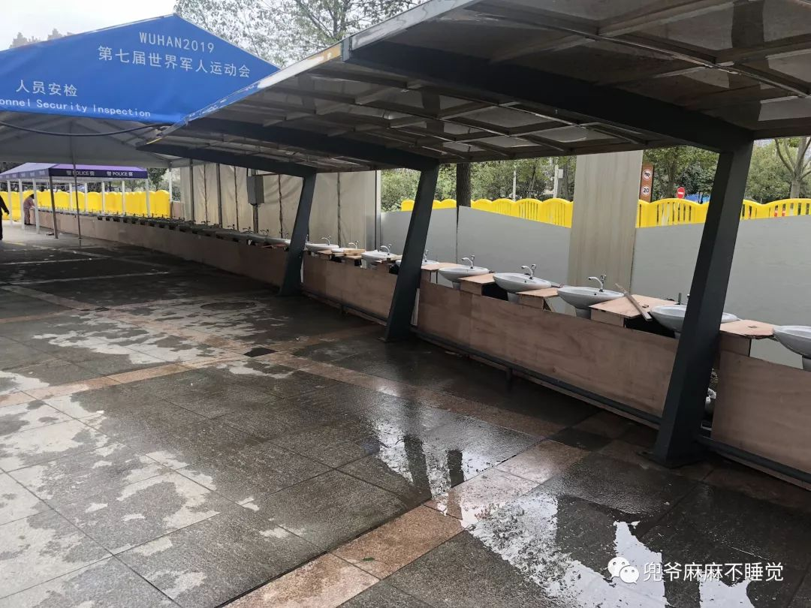
洗脸池出来的是热水，但在洗漱高峰期会有点供应不上，可以错峰去。
整个塔子湖方舱就全部溜达完了，唯一就是没有洗澡的地方，对于核酸一直未转阴，需要长期住在这里的人很不方便，希望后期可以完善。
方舱生活篇
方舱的餐食
方舱每天的伙食都不错，三餐都是由武汉艳阳天酒店提供。
早餐一般是面点鸡蛋牛奶，午晚餐是3荤1素，再外加一碗汤或者一个水果。如果没吃饱，可以再找护士要一份。

在现在资源短缺的武汉，能有这些菜很不错了。
偶尔还发个零食。

入住方舱的人们
按照患者手册上写的收治标准和我这几天的观察来看，目前我这个方舱收治的多数是和我一样的，没有什么症状了，但是核酸是阳性，因为还具有传染性，所以都集中在了方舱里，等待病毒完全清除干净，再解除隔离回家。
我这个区域之前有个大姐一直在高烧，就待了2天就被120转去医院治疗了，还有个婆婆因为一直胸闷，也没2天就转院了，所以方舱的医疗通道是很畅通的。
可能是留在这里的大部分是没有症状活动自如的人，所以大家自发的活动也是各种各样。
每天都会练舞的姐姐，动作特别专业和优美。
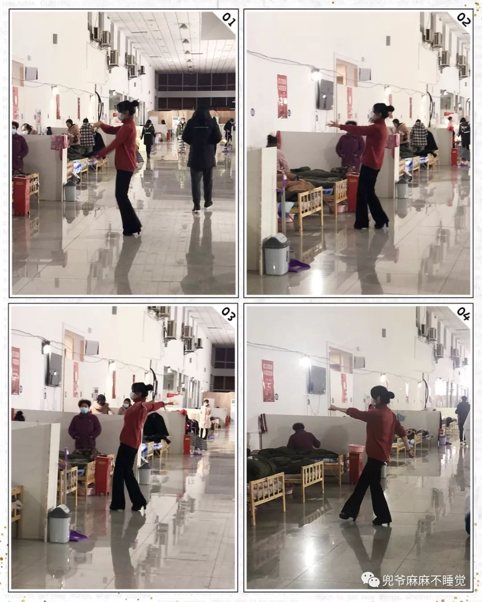
写毛笔字的大叔，沉心静气。

电视里在放雷神山医院的情况，人们都围了过来。

织毛衣的大姐。

看书的人们。
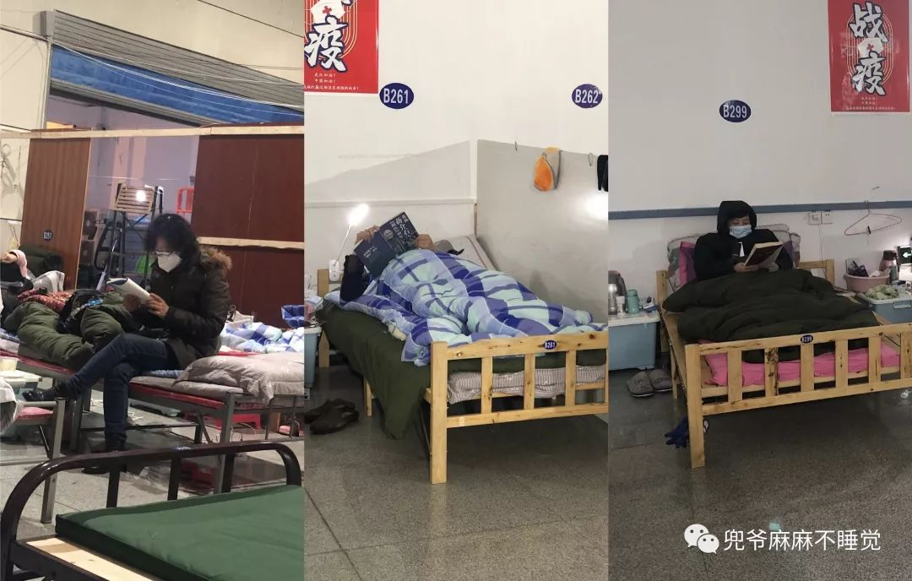
给吸奶器消毒的哺乳期妈妈。

每天大厅都会分时段响起广播，播一些疫情知识宣传和相声小品等节目，然后我发现，只要是放了音乐，叔叔阿姨大哥大姐们就开始跟着节奏摇起来了。

随着方舱的日子一天天过去，在第四天的时候，各个散落在民间的艺人们终于聚集在了一起，组成了一支支舞蹈小方队，咱离胜利大会师的广场Party还会远吗？
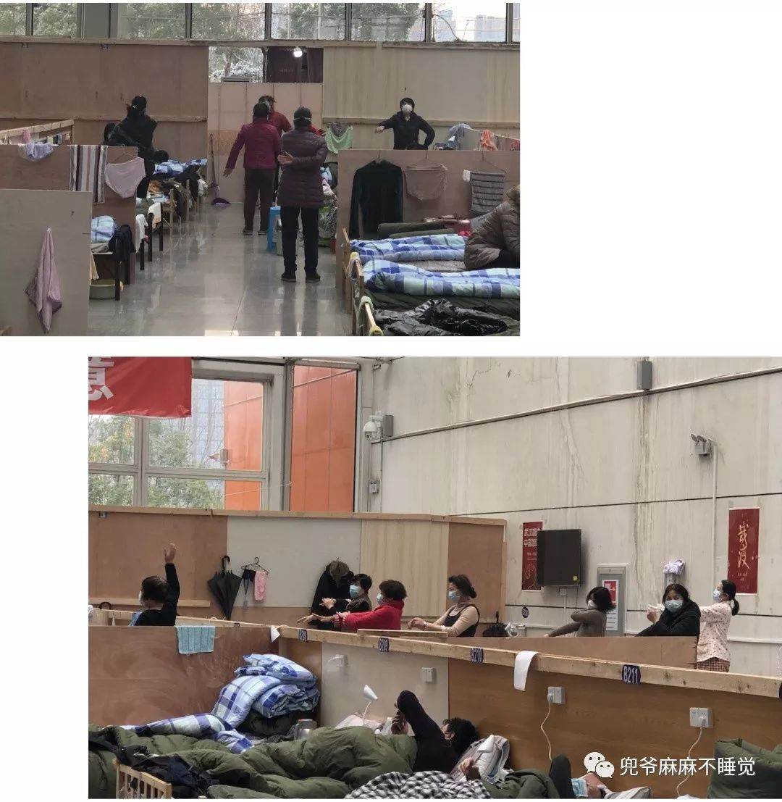
出太阳啦，大家跑到外面去晒太阳，活动活动。

方舱的生活
晚上，场馆里的灯都是不关的，有发遮光眼罩，所以影响不大。

14号晚上天气预报明天要降温下雪，晚上就发了御寒棉袄。

还记得一开始发放的物品里有个小台灯吗？这里晚上是不关灯的，所以我一直很纳闷发这个是干嘛，我也从来没用过。
直到第二天晚上看到大姐们拎着到处走，我才发现，原来是晚上去上厕所的时候用的，因为简易厕所内部无法装灯，门一关就全黑了。

我之前一直都是用的手机电筒，这灯跟手机也没区别嘛，还不是要拿在手上，手机的话还可以临时放荷包里。
直到，我看见了一个小哥哥的神操作，当时没来得急拍下来，我来演示一下。

台灯的灯杆是可以弯曲的，直接挂在脖子上，解放双手，行走的移动光源有没有！
这才是带着台灯上厕所的正确打开方式嘛。
方舱是可以家人送东西进来的，但从15号武汉开始封小区，车辆也不能上路了，对于普通民众来说，除非是住塔子湖旁边，家人可以步行前往，其他区域的想送东西就不可能了。

我进来的第三天中午，核酸检测设备到了，以后方舱的患者可以直接在舱内做检测了。
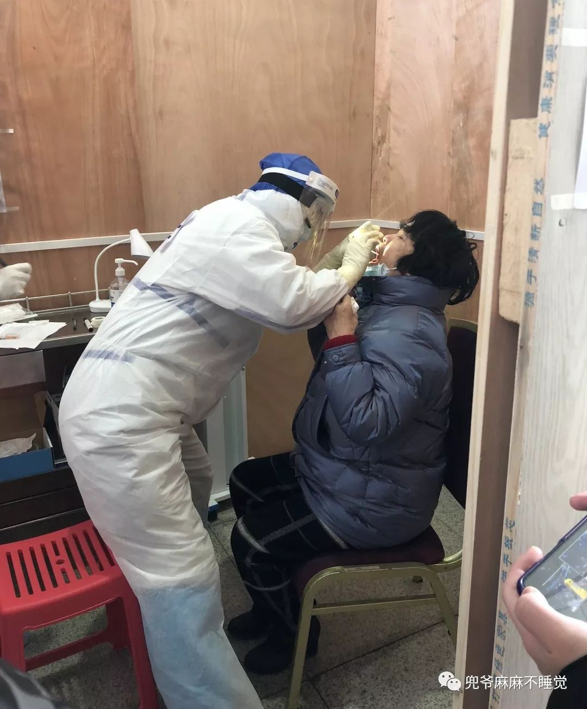
第四天，到了制氧机，是煤矿尘肺病防治基金会和沈阳爱尔泰公司捐赠的，另外，CT机也在调试中了。
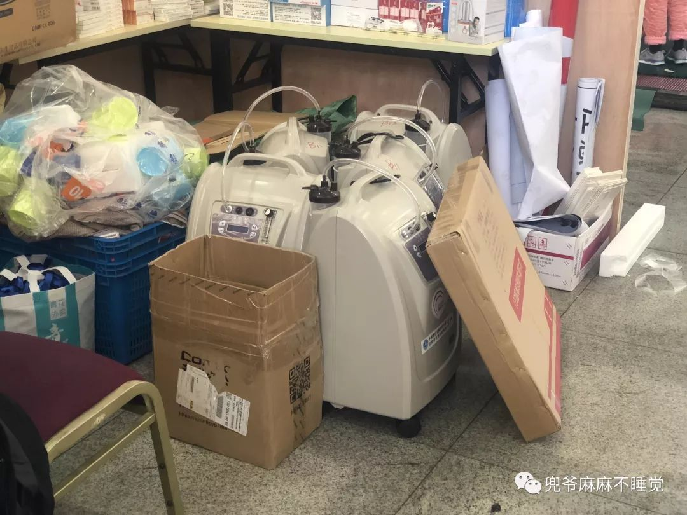
晚上发了抗疫心理自助手册，大赞。这个时候，对病人也好，对医护人员也好，心理疏导都很有必要。
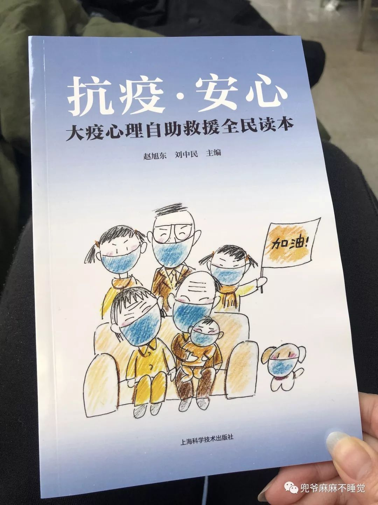
方舱的工作人员
塔子湖方舱里，天津来的医护团队人数最多，其次是河北的团队。我所在的B区，基本是由天津的团队负责的。
特别喜欢她们带卷儿的普通话，很亲切。从这几天的相处和观察看到，她们每一个人对患者都是主动的去照顾，主动的去为患者考虑要做些什么，真的很感谢她们！
交接班进行时
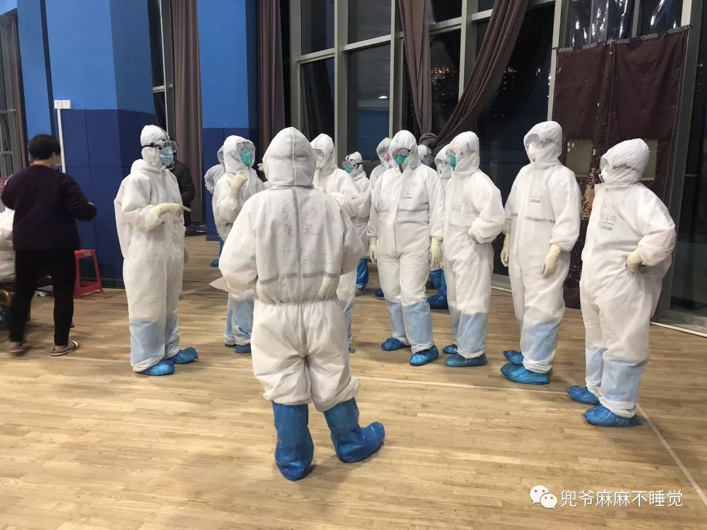

帮助病人们

来自张家口医护团队的灵魂画手，热干面，大家看出来了嘛？

一群大白~
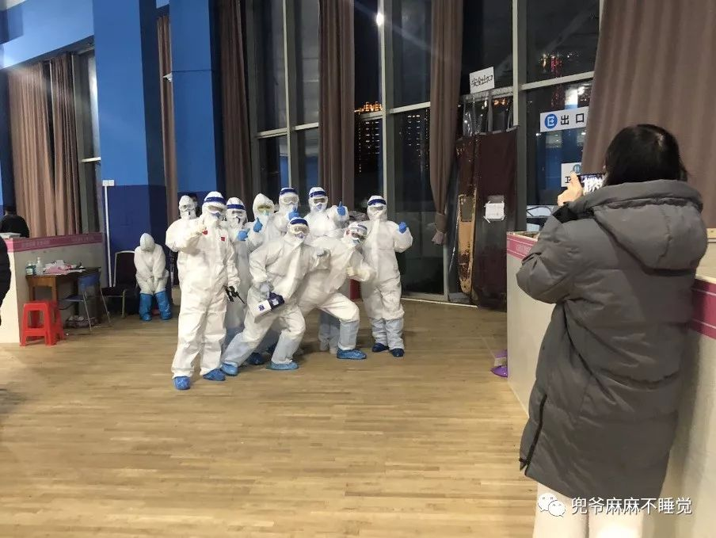
交完班的医生护士们等待着出隔离区，为了避免前面清洁区内的人数过多，医护们排队在清洁区入口处，依次处理身上衣物。

每个医护人员的着装标准都是，身上一件医用防护服，一层鞋套，一件一次性防护服，一层鞋套，依次叠加，医用口罩2层，最后戴上护目镜或面部防护帽。
然后在外层防护服的胸前或者背后都会用笔写上，来自的地区和医院名，是医生还是护士，自己的姓名。
每次离开时，护目镜和防护帽放到旁边桶里集中消毒，下次使用，最外层的防护服和鞋套脱下来丢弃。

最后这样就可以进入清洁区了。
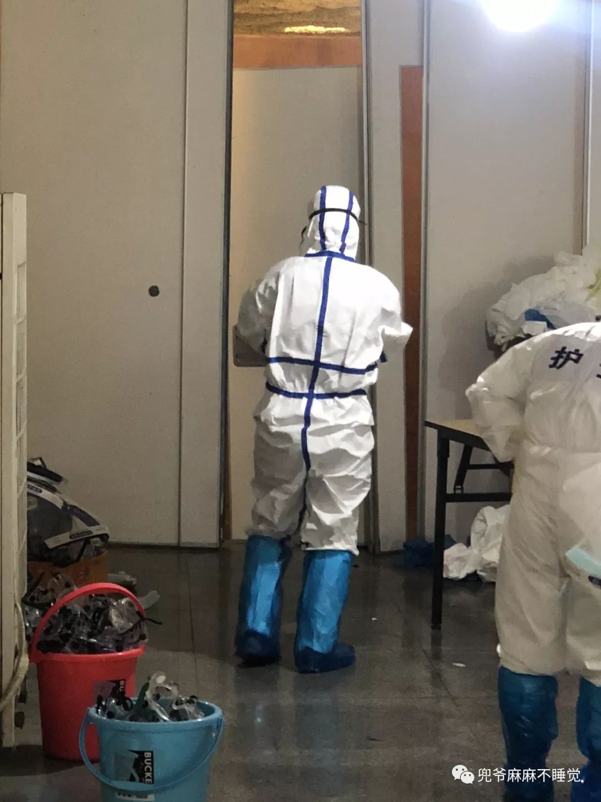
从我的观察发现，他们每次脱下任何一个物品之前，都要用消毒液搓手2分钟，即脱完护目镜，口罩，外防护衣，外鞋套，一共要消毒手4次，最后进入清洁区前还要消毒1次。
所以一个医生全部处理完整个流程，至少需要10分钟，整个交完班的医护团队排队做完至少需要1个小时才能全部走出隔离区，之后跟护士聊天得知，她们全部搞完到酒店实际要2个小时。
清洁人员在每天的三餐时间过后都会更换垃圾袋，清理地面积水，清扫地面污渍。


厕所清洁

电工师傅刚处理完一处电路故障。


病区消毒

在我来的那天晚上看见一个医生提着个电暖炉走了过来，我就跟在了他后面。
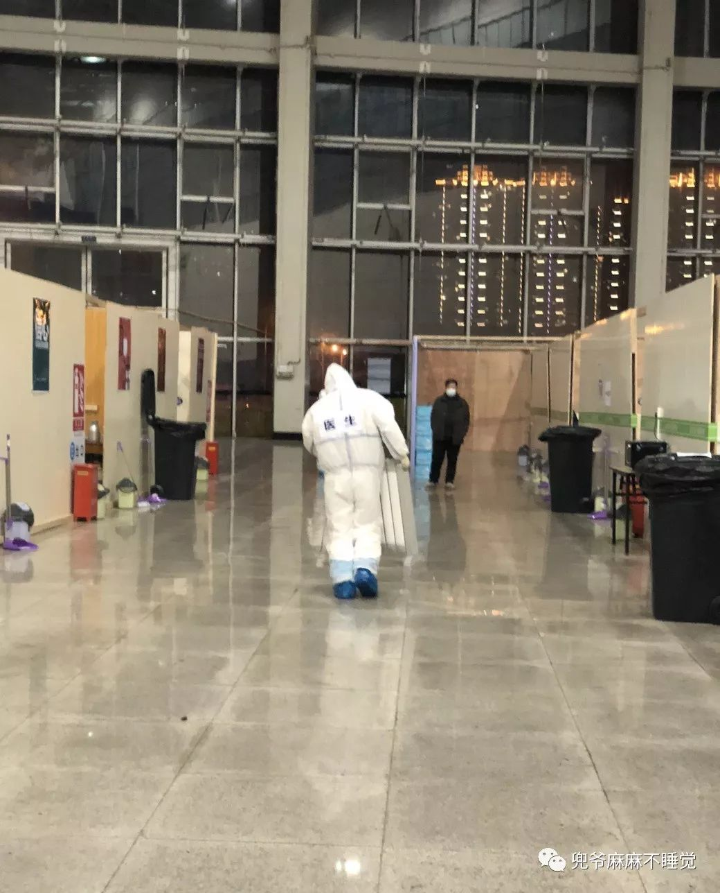
一开始我以为他是给哪个病人送的，原来他是给室外帐篷里的医生送的，就是刚开始我进来登记填表的地方，这么冷的天，护士们一直坐在外面做入舱登记工作。
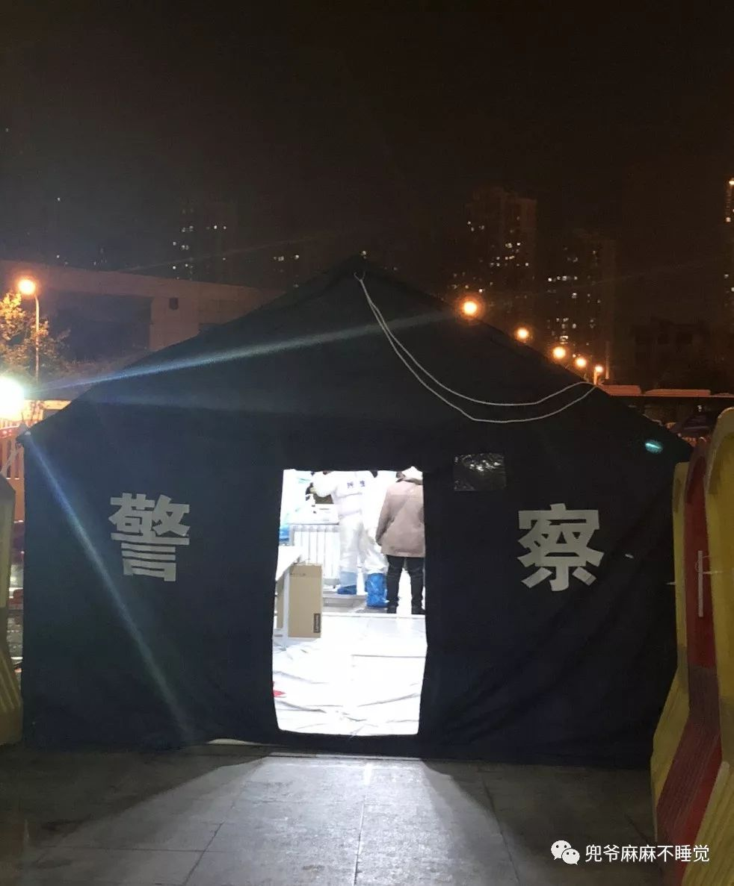
15号，武汉飘雪后的方舱外。


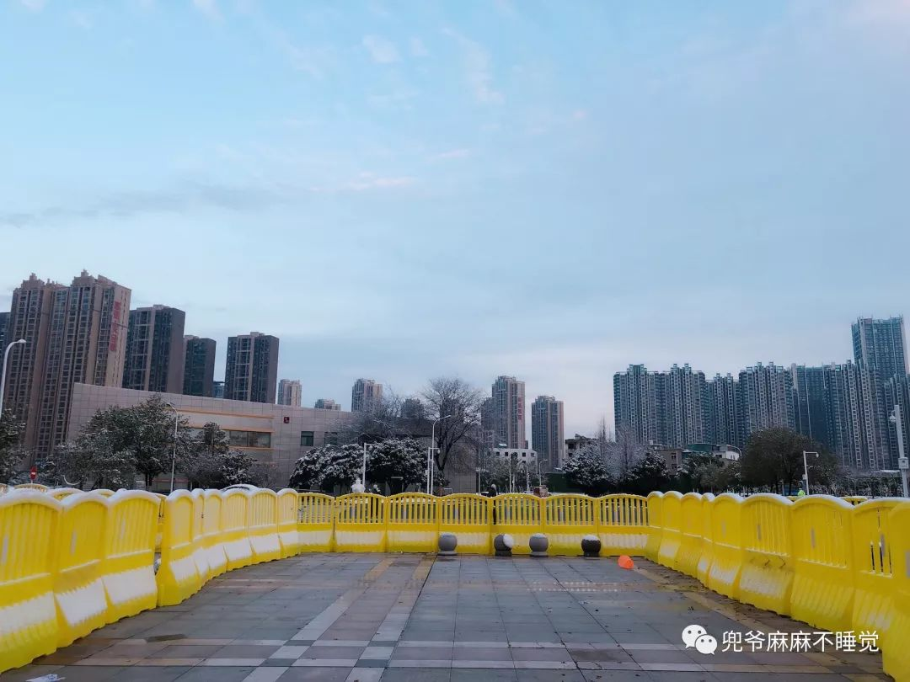
应该是在方舱门口执勤的工作人员，在积雪以后堆了个小雪人在防护栏上，莫名的小确幸。

破冰之旅
17号的中午，在天津医生团队的策划下，在这个特殊的时期，在方舱这个特殊的环境下，一场生日会隆重举行了，寿星们是全舱2月份生日的朋友。
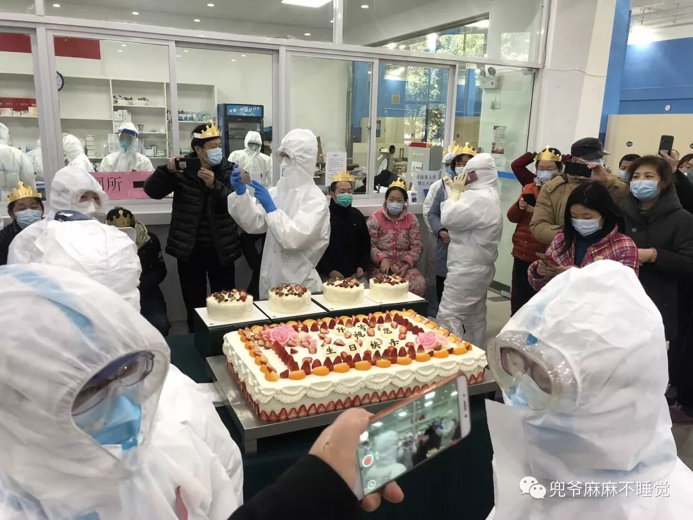
一个超大尺寸的仟吉蛋糕，另外每个寿星都会再单独发一个8寸蛋糕。
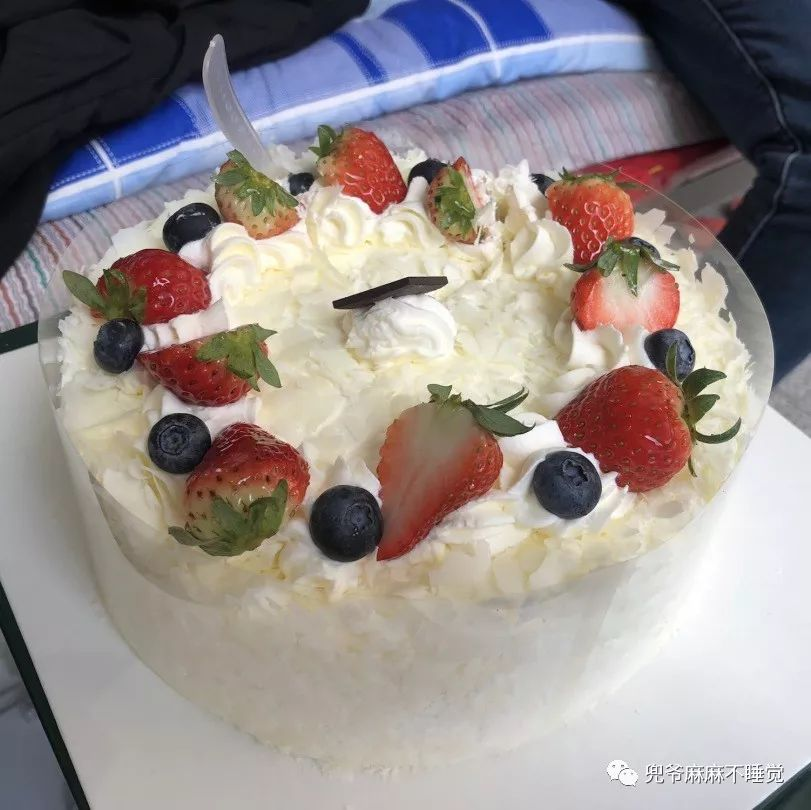
生日会记录视频
人是群居动物，人除了基本的生活需求还有精神需求，特别是现在身处武汉疫区的人民和医护工作者。
这次的疫情，这次的方舱模式，对医生，对病人，对医患之间，都是陌生的，未知的。
这次的生日趴就像一次情感的破冰之旅，拉近了彼此的距离，医生不再是病友不舒服时才叫的人，病友也不再有让医生担心自己有没有照顾好他们的那种距离感。
人与人之间的间隔正在融化。
生日会之后，当天晚上，开水区旁。
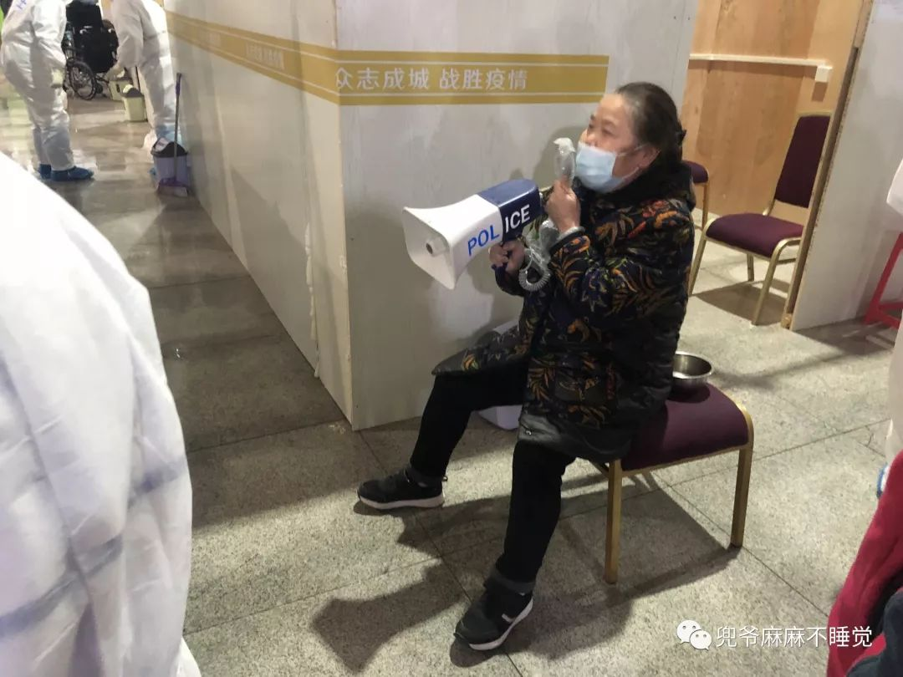
由于洗脸池在外面，有些人在开水区这里洗漱，导致地上有很多积水，护士多次劝阻，效果不明显。
而这天晚上，一位热心的大妈，主动接过护士手里的广播喇叭，拖了个凳子过来坐定，一连串气势恢弘的武汉话脱口而出。
“勒里滴开水是接到huo滴，不是洗口用滴，洗口到外面克洗，把个水泼到地哈到处是滴，黑死个人滴，再说一遍，这里不紧泼水，要洗到外头克洗！”
（这里的开水是接着喝的，不是刷牙用的，刷牙去外面刷，把水泼在地上到处都是，吓死人的，再说一遍，这里不准泼水，要洗漱去外面）
比起护士的温柔提示，大妈威力十足。
生日会的第二天，由舱内的病人担任的志愿者团队也组建起来了。
志愿者们帮助护士给各个区域发放餐食。

护士和上文提到过的每天练舞的姐姐教志愿者们跳舞，等音响到货了，咱的广场舞就要搞起来了，我这个区的婆婆们都跃跃欲试了。
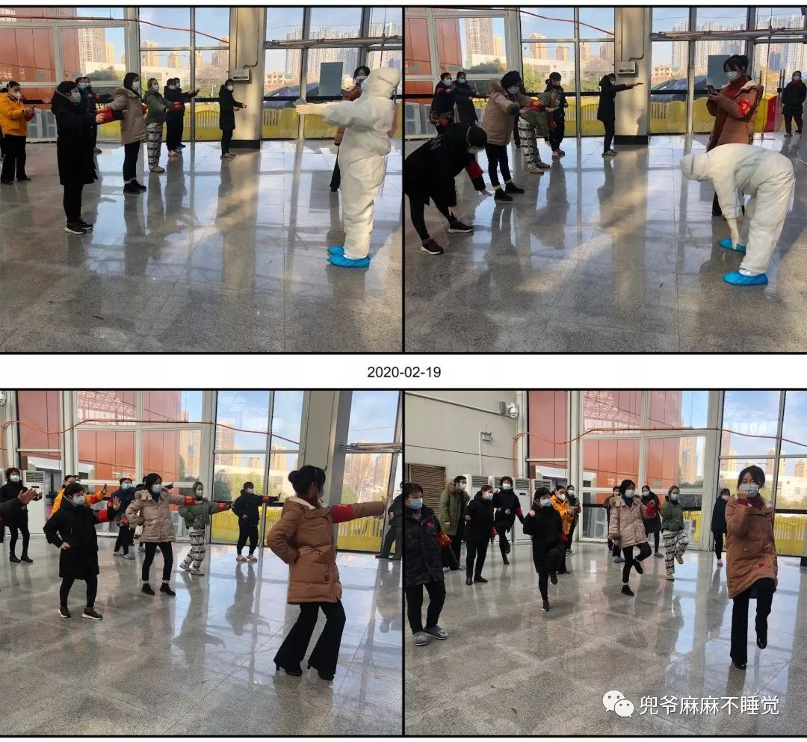
舱内有很多消毒洗手液，护士教志愿者团队七步洗手法，再由志愿者们传播给身边的人。
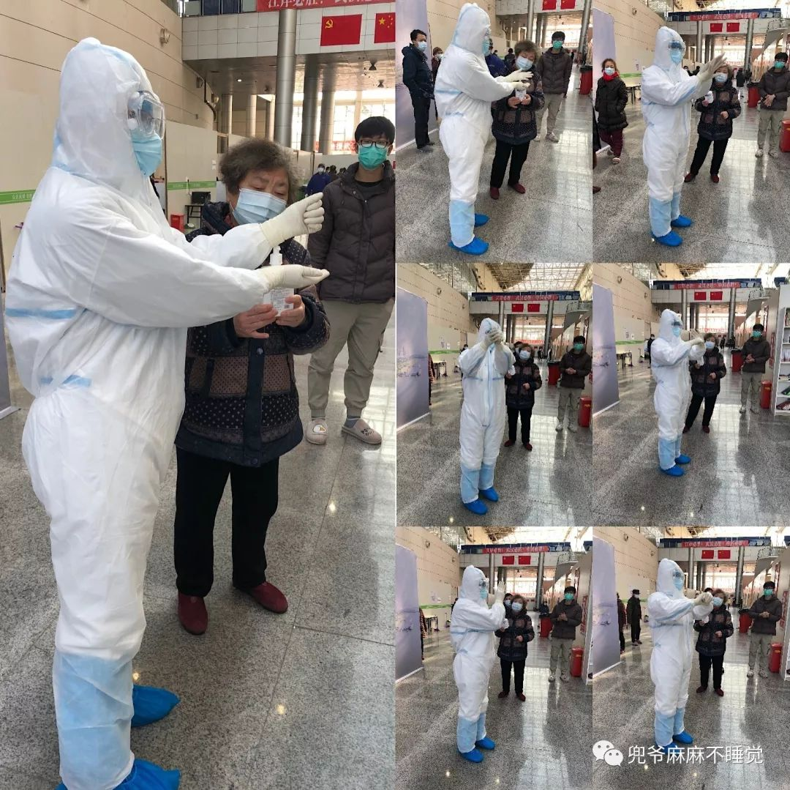
方舱就像是一个临时组建起来的社区，让大家都参与到日常的工作中来，让整个舱内的氛围活跃起来，对当下这个时刻的心理调节有很大的意义。
一些闲聊
在护士坐着休息的时候，我跟她们聊了一会。
一个天津北辰医院来的护士跟我介绍，她们每次进来就不吃东西不喝水不上厕所了，虽然是6小时一班，但是前后穿脱衣服很费时，往往可能在交班点后2小时才能回到酒店，然后才能吃饭，再将里面穿的医用防护服清洗消毒，下次班再穿。
天津一医院一个医生说，她们都是第一次做这种形式的救援，一切都是在慢慢摸索，一边做一边完善这里的一切。还让我收集周围人的意见，对于各个流程环节有哪些地方需要改进的，询问我们喜欢什么样的娱乐活动，她希望能够把这里变得越来越好。
对了，她就是那个策划生日会的人。
不过医护们普遍都有的反应是，这里年纪大的人说话听得不是太懂。（笑）
每日流程篇
这里的医护人员每个团队是隔一天排一次班。每天4班倒，6小时一班，交接时间依次是8点，14点，20点，2点。
交接班时医生们是非常忙碌的，如果有事要找医生护士的，尽量避开交接班的时间。
每天护士查房的时间依次是6点，9点，16点，22点。（大致时间）
10点左右会有医生过来巡视，询问病人情况。
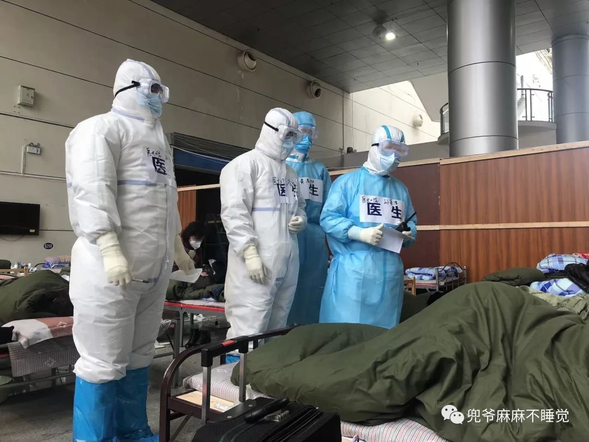
上面的是每天的例行巡检，如果有症状严重的病人，比如高烧不退，医生和护士就会很频繁的单独过来询问身体状况，一直不见好转的话，就会安排120转送医院。
每日三餐的送餐时间分别是7点，12点，18点。（大致时间）
下面是每日的流程图，更加直观。

一些碎碎念
一个方舱医院的建成并不是搞几个隔断，摆几张床就成了的，让它运转起来也不是收一些病人，派几个医生过来就完事了的。
在这么短短的时间内，让容纳1000人的医院，从建成到每天有条不紊的运转下去，并且还在不断的慢慢完善，需要的是多方的人力物力的协调支持。
从一开始没有广播，到餐点广播，到平常时段也偶尔放点歌。
从只有基本生活保障设施，到有空气消毒净化器，到开始发放针对疫情的心理辅导书籍。
从只是正常的餐点到开始增加发放零食。
从只有隔离居住功能到开始可以核酸检测再到可以做CT。
从一开始每天只有吃饭睡觉到各种活动越来越丰富。
这一切都在慢慢的越来越好。
从我进来至发文的前一天，方舱变化轴线

在这里住了的几天时间里，我也看到了一些不太好的现象，我想说的是，既然我们来到了这里，每天生活在一起，生活环境也是需要我们大家一起来维护的。
我们共同的敌人是病毒，我们隔离在这里只是为了让这次的疫情更快的被消灭，让我们的社会尽早的恢复正常的生产运转。
方舱的生活条件可能没有在家里方便，但在当下我们只有和医护人员和工作人员相互配合，才能更快的打赢这场战役！
不是每个人都要成为英雄，但我们每个人都是抗疫的一份子。
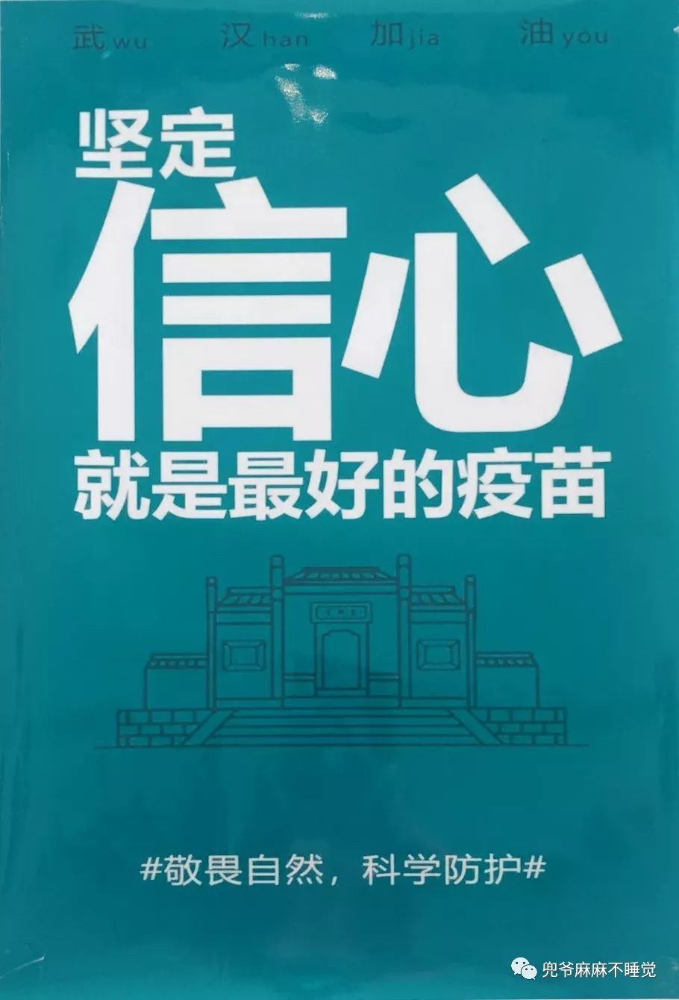

截至发文的时候，才知道塔子湖方舱二楼的病区开放了，从进来到现在一直负责我们区域的天津的医护们都调到二楼去了，大家都非常非常的舍不得。

大家都争相邀请护士们疫情过后到武汉来玩。
一个婆婆说，不要你们钱，全部费用我们包了！
我的眼睛也湿润了。
更多文章推荐：
觉得内容还不错的话，点个“在看”呗

原文链接 备份链接 原创 钟玄雅 真实故事计划 真实故事计划 4天前 武汉是世界上大学生最多的城市之一。新型冠状病毒肺炎疫情爆发后，一百余万大学生返乡，成为各地防止传染的重点防控隔离对象，遭遇着忧虑、歧视和隐私泄露。疫情给这群新鲜人上了社 …
原文链接 备份链接 武汉市各区正在加紧把所有发热人员集中隔离，并进行全部发热人员的检测，目的是让疫情全部暴露出来，之后疫情防控也将从“攻坚战”转至“歼灭战” 图/法新 文 |《财经》特派武汉记者 言清 王小 编辑 | 王小 “今天的会非 …
原文链接 备份链接 “我在窗台旁看了很长一会雪，特别想家，我们也在问什么时候结束。” “病友们觉得床上有电热毯，冷的话躲在被窝里就行了。医护人员没什么地方可以躲，所以除了个别患者有畏寒的情况，就让医护人员优先用（取暖设备）。” *“一 …
原文链接 备份链接 伴随着火神山、雷神山医院开始收治病人，15家方舱医院陆续启动， 各省医疗队开赴武汉，武汉所有确诊患者与疑似病例都将“应收尽收”。 在人类抗击疫病的历史上，“武汉会战”已成为一场史无前例的超级行动 图/新华、中新 武汉 …
原文链接 备份链接 澎湃新闻记者 伍银芳 蔡琳 吕妍 最近几天，武汉一些学校宿舍被征用的相关信息引起网友热议。而这一热议的背后，都源于武汉市新冠肺炎疫情防控指挥部征用学校宿舍。随着武汉的新冠肺炎患者确诊数量越来越多，定点医院和已投入使用的 …